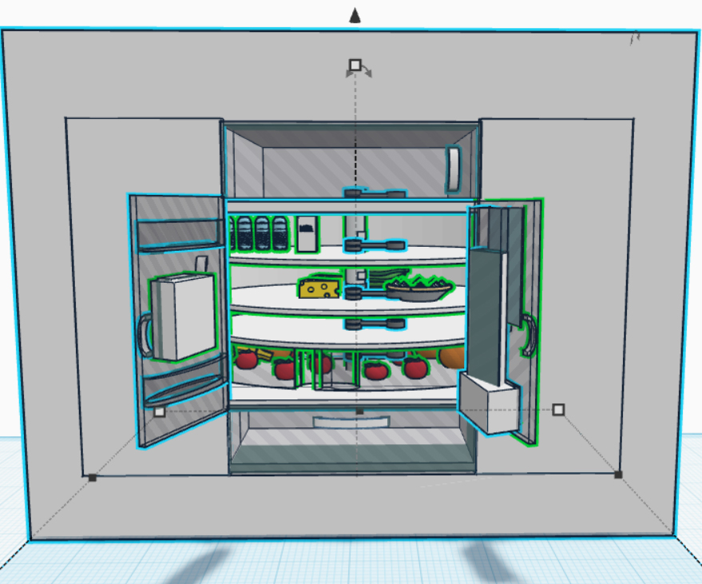

Prompt: Take a top down shot of an array of objects that go together arranged in such a way that it created balance
Nature
Prompt: Showcase the ability to use short focal length to contrast the near and far elements in a photo
Commercial
Prompt: Capture an array of like-objects to show a collection in commercial photography.
Design
InDesign
Prompt: A Typography poster showcasing all uppercase and lowercase letters as well as a few symbols that you believe best captures the fonts personality
Illustrator
Prompt: I had a video design project where I got to talk about the favorite place I'd traveled and I got a little carried away on title cards for traveling through different places in the footage
CAD

Render a depiction of the unique you and your teammates brainstormed